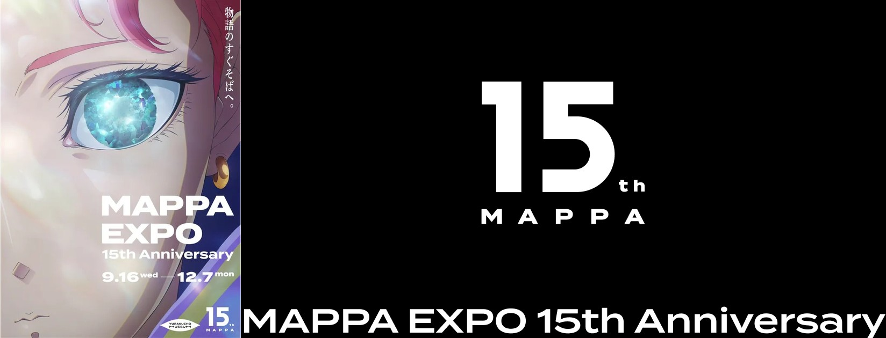

MAPPA EXPO in the morning at Yurakucho, then Ikebukuro: lunch, the anime shops, the Kaoruhana Rin to Saku 5th anniversary exhibition and the Mikami Saka signing. Entry to the signing is at 16:00.
The day
9:00
Excelsior Caffé, Kinshicho
9:15
JR Sobu Rapid Line to Tokyo
10:00
MAPPA EXPO
12:15
Yurakucho Line to Ikebukuro
13:00
Lunch in Ikebukuro, pick one of six
14:00
Animate and the shops
15:45
Signing, Space Galleria 8F
17:30
Done, in Ikebukuro
Keep in mindTimes are approximate. The exhibition closes at 17:00 on its last day and the last entry is 16:30, so we are at Space Galleria before 16:00.
Excelsior Caffé is on the first floor of Arkkit Kinshicho, a short walk from Kinshicho Station and near your Airbnb. I am there from 9:00. A coffee first, then we go.
JJR Sobu Rapid Line to Tokyo, about 10 min, then 10 min on foot
210:00
MAPPA EXPO 15th Anniversary

Fifteen years of MAPPA work: Chainsaw Man, Attack on Titan, Jujutsu Kaisen and more. It is in YURAKUCHO MUSEUM on B1F of Tokyo International Forum. Entry is from 10:00 and we give it about two hours.
Open
10:00 to 18:00
Last entry 17:00
The goods-set ticket does not include goods at the venue. They are picked up later, so there is nothing to carry out.
YYurakucho Line from Yurakucho Station to Ikebukuro, about 20 min, no change
313:00
Lunch, pick one of six
Six places in Ikebukuro, all within a few minutes of Animate: two noodle shops and four other kinds of food. Tap a tile for details. Tell me which one you feel like and we go.
Scores are from Tabelog, October 2026. Tabelog scores run lower than Google, and 3.5 is already very good.
Next
Walk to Animate, 2 to 10 min
414:00
Animate Ikebukuro
Animate is Japan's biggest anime shop chain. The main store is a short walk from Ikebukuro Station, with more anime shops on the streets around it. We look around before the signing.
The Kaoruhana Rin to Saku 5th anniversary exhibition is in Space Galleria on the 8th floor of the Animate main store. The signing is by the author, Mikami Saka. Entry is at 16:00.
Entry
16:00
Signing ticket
Closes
17:00
Last entry 16:30
I carry the tickets for both places. Please bring your passport in case staff ask for ID.